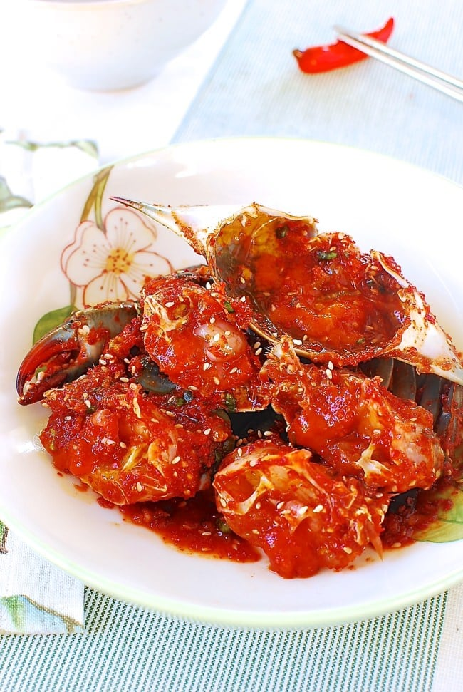

Home
Gejang
Korean raw marinated crab

Description
Raw crabs marinated in a spicy seasoning, called yangnyeom-gejang. Yangnyeom means spicy sauce, and gejang is seasoned raw crab. It’s sweet, soft, spicy, and has a jelly-like texture. There are a few different kinds of gejang, depending on the seasoning.
Ingredients
- about 2 pounds of Korean flower crabs (or blue crabs) shelled and cleaned into 1 pound
- 6 cloves garlic, minced
- 1½ teaspoons peeled ginger, minced
- ⅓ cup gochu-garu
- ¼ cup soy sauce
- 1 Tbsp sugar
- 1½ teaspoons toasted sesame seeds
Steps
- Thaw out the crabs in the refrigerator for several hours, or overnight.
- Place the crabs in a large bowl. Run cold water over them, and scrub each one with a kitchen brush. Change the water a couple of times while cleaning. Drain.
- Place one crab belly up on a cutting board. Lift and twist off the flap-like apron.
- Flip the crab over and remove the top shell.
- Using your fingers, take off the feathery gills.
- Cut off the antennae, eyes, mouth parts, and the ends of the back legs that don't have any meat, using scissors.
- Use a sharp chef's knife to cut the crab body into 4 to 6 pieces and put them in a large bowl. Repeat with the remaining crabs. Rinse the crab pieces in cold water and drain.
- Crack the claws with the back of the knife, which makes them safer to eat and allows them to absorb the seasoning sauce a little easier. Place the crab pieces in a large bowl.
- Scoop out the tomalley (the greenish digestive gland) and roe (the orange or red eggs) from the top shells with a spoon and put them in a small bowl. Rinse with cold water, drain, and add to the large bowl.
- Add garlic, ginger, gochu-garu, soy sauce, and sugar to the crab in the large bowl. Mix until well combined.
- Sprinkle with the sesame seeds. Transfer to an airtight container and refrigerate for at least 12 hours (you can eat the crab immediately, but it will taste better after it has had time to absorb the sauce).
- Serve cold as a side dish for rice. Yangnyeom-gejang will keep in the fridge for up to one week. If you want to save it longer than one week you can freeze it, and then when you want to eat it simply thaw it out and eat.